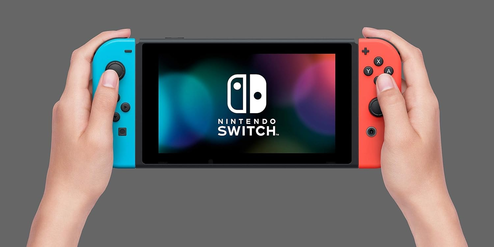

Navigating with
curiosity & clarity
I help teams understand their users — through recruitment, data collection, synthesis, and evidence-based decisions.
Case Studies

Identify real user behaviors and pain points
Study protocol + usability testing for Nintendo's Switch user setup journey.

Maximize attendees' social bonding in events
Research and design on co-creation in community events to foster interactions.

Designing for accessibility first
Sustainability platform to increase eco-consciousness and environmental efforts.
My Methods & Skills
Tools I use
 Figma
Figma
 Miro
Miro
 Excel
Excel
 SPSS
SPSS
 Tableau
Tableau
About me
I'm a UX researcher with 2+ years of experience working across e-commerce, wearable hardware, AR/VR, and educational contexts. I'm drawn to explore and understand the "why" behind user behavior with Human Factors lens, whether through operations or executions
Outside of work, I enjoy trying new food places, exploring photospots, and watching anime & drama.
If you're curious about my process, I'm always happy to talk.